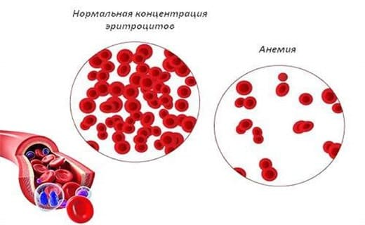
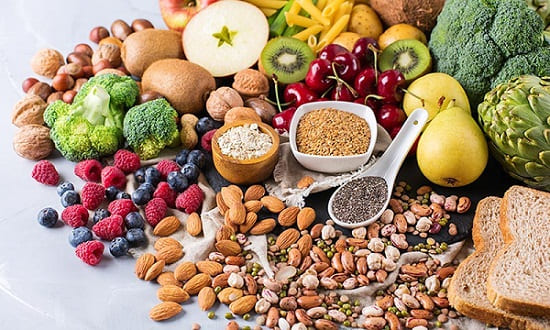

Под анемией понимают «низкий уровень гемоглобина в крови». Гемоглобин — это вещество, которое окрашивает эритроциты в красный цвет и переносит необходимый тканям кислород. У детей с низким уровнем гемоглобина ткани получают недостаточно кислорода, от чего страдает весь организм.
СИМПТОМЫ
ПРИЧИНЫ
ДИАГНОСТИКА
В первые несколько месяцев жизни у младенцев отмечается избыток эритроцитов и гемоглобина. Но примерно за два-три месяца этот излишек расходуется, и начинается выработка собственных эритроцитов. Чаще всего у младенцев и малышей после года бывают железодефицитные анемии. Для выполнения своей функции гемоглобин нуждается в железе. Если ребенок не получает достаточно железа с едой или теряет его с эритроцитами при пусть даже крохотном кишечном кровотечении, у него разовьется железодефицитная анемия. Вот почему ваш врач периодически проверяет гемоглобин у малыша (обычно анализом капли крови, полученной при проколе пальца) между 6-м и 2-м месяцами и чаще — между первым и вторым годами жизни, если у малыша были какие-либо признаки анемии.
ЧТО ДЕЛАТЬ
Педиатры очень педантичны в вы явлении признаков анемии и проверке на нее, и не только у младенцев с риском развития анемии, например, недоношенных, родившихся с недостаточным запасом железа. Если врач говорит, что ваш младенец анемичен, о предлагаем вам воспользоваться следующими советами.
Давайте ребенку больше железа. Если анемия довольно серьезная, врач сможет назначить какие-либо железосодержащие капли помимо увеличения железа в рационе. Убедитесь, что провели лечение как положено, обычно железосодержащий препарат дают еще месяц-другой после того, как уровень гемоглобина вернулся к норме, чтобы создать достаточный запас железа в организме ребенка.

СОВЕТ ДОКТОРОВ СИРС: ОТНЕСИТЕСЬ СЕРЬЕЗНО К ЖЕЛЕЗОДЕФИЦИТНОЙ АНЕМИИ У детей с железодефицитной анемией быстро устает не только тело, но и мозг. По современным представлениям младенцы, долгое время страдавшие железодефицитной анемией, имеют повышенный риск отставания в физическом и умственном развитии. Иногда гемоглобин в анализе крови из пальца может быть «на нижней границе нормы» (норма для младенцев — 11—13), но не оптимальным. В такой ситуации не повредит назначить ребенку препараты железа или приналечь на продукты, богатые железом, чтобы поднять уровень гемоглобина до верхней границы нормы. При необходимости будет сделан анализ уровня ферритина в сыворотке крови, который более точно определяет количество железа в крови. Этот анализ делают в специальной лаборатории. Если внешний вид вашего ребенка или его рацион заставляют предположить недостаток железа даже при нормальном уровне гемоглобина, врач, чтобы удостовериться, может назначить анализ на ферритин прежде, чем рекомендовать железосодержащие добавки. |
Используйте обогащенную железом молочную смесь. Некоторые молочные смеси содержат мало железа — это указано на упаковке. С согласия врача перейдите на смесь, обогащенную железом.
СОВЕТ ДОКТОРОВ СИРС: К ПРОДУКТАМ, БОГАТЫМ ЖЕЛЕЗОМ, ДОБАВЬТЕ ВИТАМИН С Витамин С улучшает усвоение железа из продуктов. Так что давайте ребенку стакан апельсинового сока к мясу, спагетти с томатным соусом и домашними фрикадельками и богатые витамином С фрукты и овощи с мясом. Вот почему бабушка советовала: «Ешьте мясо с овощами», — это полезно для профилактики анемии. Сочетание богатых железом продуктов с продуктами, богатыми витамином С, позволяет вдвое увеличить усвоение железа. |
Попозже вводите коровье молоко в рацион младенцев и ограничьте его употребление детьми старше года. Комиссия по питанию Американской академии педиатрии рекомендует отложить до года употребление коровьего молока в качестве основного продукта питания по двум причинам: в коровьем молоке мало железа (детские смеси обогащены железом) и коровье молоко может раздражать слизистую оболочку кишечника, вызывая точечные кровотечения и потерю железа. При подозрении на кишечное кровотечение врач проверит кал ребенка на скрытую кровь и посоветует сократить или совсем прекратить давать ребенку коровье молоко. Так как йогурт не столь аллергенный и более благоприятен для кишечника, чем молоко, мы рекомендуем его в качестве основного молочного продукта, начиная с девяти месяцев.
СОВЕТ ДОКТОРОВ СИРС: ОГРАНИЧЬТЕ МОЛОКО Не давайте вашему малышу более 450 мл коровьего молока в день. Кормите малыша продуктами, богатыми железом. Главные продукты, богатые железом, которые можно давать малышу, это: • говядина; • ягненок; • темное мясо домашней птицы; • рыба (тунец и дикий лосось); • патока мелиссы; • сливовый сок; • томатная паста; • картофель с кожурой (оставляйте богатую железом кожуру, когда готовите картофель); • батат; • бобы и чечевица; • изюм; • сухофрукты (абрикосы, инжир, персики); • обогащенные железом злаки. |
Здоровье ребенка от докторов Сирс / Сирс У. и др.